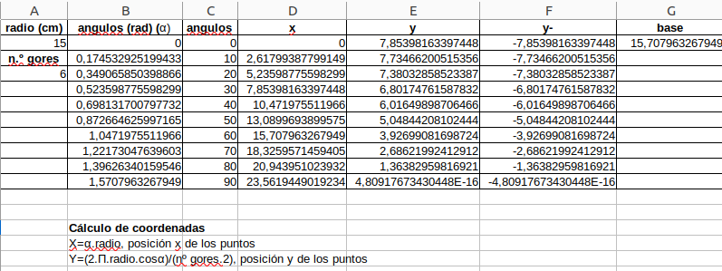
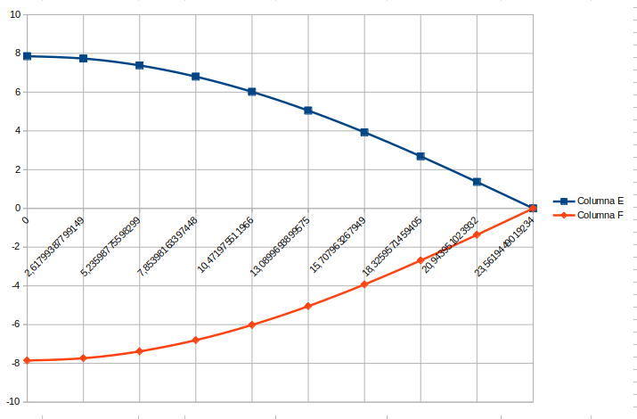
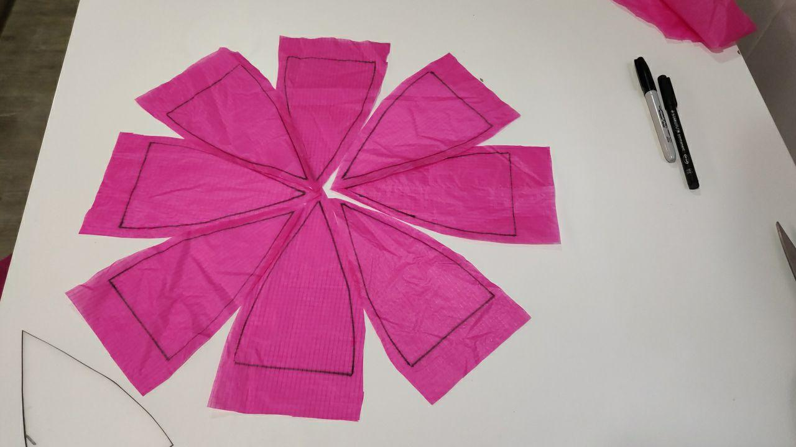

Democratizando CANSAT
Trazado de gores (piezas)
Mediante hoja de cálculo
Se ha realizado una hoja de cálculo para calcular la forma y dimensiones de nuestros gores (secciones o gajos) de nuestro paracaídas, en función del radio elegido y el número de secciones (gores).
Para el cálculo de coordenadas se han utilizado las siguientes expresiones matemáticas para las posiciones X e Y del trazado de las secciones:
\(x=α (ángulo).radio\), posición x de los puntos del gore.
\(y=\frac {2.pi.radio.cosα} {nº gores.2}\), posición y de los puntos del gore (hay dos una positiva y otra negativa simétricas).
Ejemplo con paracaídas de radio 15 cm y 6 gores:
Hoja de cálculo. Coordenadas de Gore.

Hoja de cálculo. Representación de gore.


Hoja de cálculo
A través de web
Esta web (http://scottbryce.com/parachute/spherical_parachute.html), indicándole datos, nos da un archivo gráfico para imprimir y recortar en papel los gores.
Obra publicada con Licencia Creative Commons Reconocimiento Compartir igual 4.0